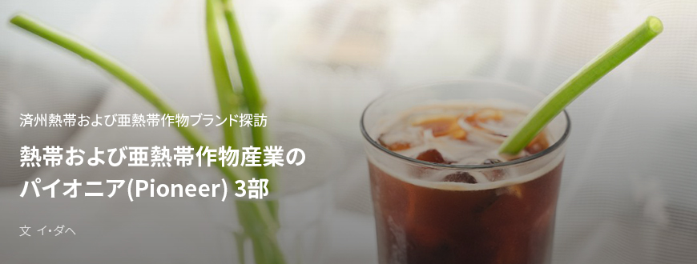
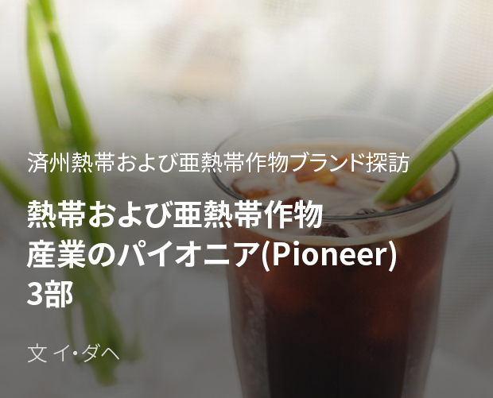
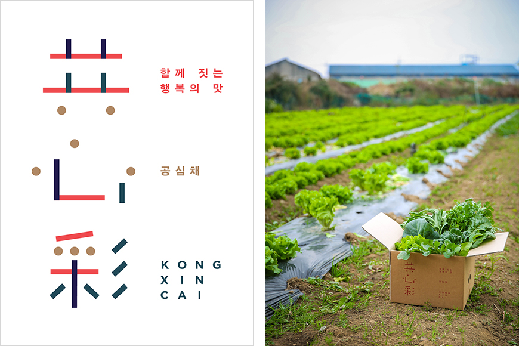
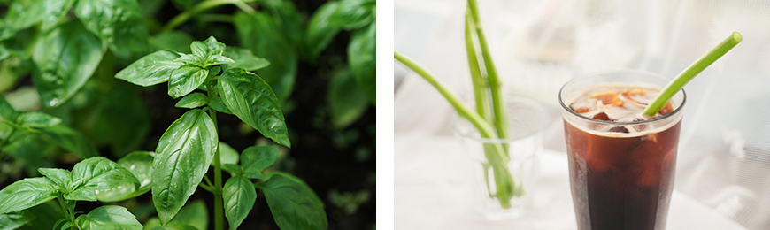

기획취재콘텐츠
- Home
- 제주라이프
- 기획취재콘텐츠
熱帯および亜熱帯作物産業のパイオニア(Pioneer) 3部새로운 글




心を集めると輝く、熱帯および亜熱帯作物の社会的農場「共心彩農業会社法人」
韓国の全世帯のうち1.6%に当たる33万は国際結婚家庭だという。国際結婚家庭の構成員は100万名にいたる。熱帯および亜熱帯作物の消費は多文化社会への切り替えをきっかけに徐々に増えている。しかし、いまだに人種差別や結婚移住女性の人権問題など社会問題が後を絶たない。「一緒に集めると輝く」という意味で野菜のヨウサイ(中国名は空心菜だが、共心彩とは韓国語の発音が「コンシムチェ」と同じことから名付けられた)から法人名を作り、済州の結婚移住女性と一緒に食の革新を先導する会社がある。済州における亜熱帯野菜の栽培、流通、体験、加工にいたるまで韓国一の農業会社を目指している「共心彩農業会社法人」がそれだ。

- (左)共心彩 ロゴ, (右)共心彩農業会社法人の農産物包み ⓒ共心彩農業会社法人 -
代表のホン・チャンウクさんは2017年、亜熱帯野菜の栽培により結婚移住女性で構成する共同体の自立を支援し、持続可能な農村と地域社会の構築を目指して共心彩農業会社法人を設立した。亜熱帯野菜の栽培に適した自然環境に亜熱帯野菜の栽培と活用をよく理解している結婚移住女性が野菜の栽培に直接参加すれば、結婚移住女性の所得増はもちろん、食の未来を考える産業の先導にも可能性は十分だと判断した。
共心彩農業会社法人は2018年の秋、大静地域の結婚移住女性と国際結婚家庭が集まっている最南端営農文化協働組合と協力、亜熱帯作物のヨウサイとパクチー栽培を開始した。収穫したヨウサイとパクチーは、クラウドファンディングプラットフォームで初めて公開された。一般に消費量の多くない亜熱帯野菜を販売しながらマーケティングにも適していると判断したためだ。クラウドファンディングからヨウサイとパクチーが一緒に入った亜熱帯野菜ボックス、共心彩農業会社法人から栽培したルッコラ、ラデッシュなどのサラダ菜、それにジャガイモ、ブロッコリーなど済州の西南端で栽培した冬越し野菜をリワードとして提供した。亜熱帯野菜に馴染みのない消費者に配慮して亜熱帯野菜のレシピをブロシュアーにして一緒に届けた。
- クラウドファンディングのスポンサーに届けた亜熱帯作物レシピーのはがき ⓒ共心彩農業会社法人 -
ファンディング目標額の100%を達成して亜熱帯野菜の試験販売は成功裏に終わった。クラウドファンディングプラットフォームを使った広報効果も相当よかった。ハイアットリージェンシーなどの済州道内ホテルから一般レストランにいたるまで、野菜供給契約を結ぶため連絡が相次いだ。また、社会革新を専門とするコンサルティン・インパクト投資機関であるエムワイソーシャルカンパニー(MYSC)ともつながった。
現在、共心彩農業会社法人ではバジルを主に生産し、亜熱帯野菜を試験栽培している。個人の消費が多くない亜熱帯野菜の特性から消費量が予測しにくい上、納入先の変化も多いため着実な消費を見せるバジルなどのハーブ類を販売することにより収益基盤を整え、亜熱帯野菜の栽培実験により今後は亜熱帯野菜の安定的な栽培農家で供給先になれるよう、実力をつけている。

- (左)共心彩農業会社法人の農場で育つバジル ⓒ共心彩農業会社法人,
(右)ヨウサイで作った環境にやさしいストロー ⓒ共心彩農業会社法人 -
(右)ヨウサイで作った環境にやさしいストロー ⓒ共心彩農業会社法人 -
共心彩農業会社法人は結婚移住女性と共にバジル、ヨウサイ、パクチーなどの亜熱帯野菜を生産・加工・販売しローカルフード化する「済州結婚移住女性たちの地元野菜のローカルフード化プロジェクト」を推進している。300坪以上の施設ハウスで無農薬認証済みのヨウサイとバジルを栽培し、2019年11月基準で学校給食・資材業者3社と10店舗以上のレストランに供給して収益をあげた。
2019年10月には西帰浦多文化家族支援センターと業務協約を締結し、移住女性たちと亜熱帯野菜の栽培および収穫方法とレシピなどの活用方法を共有し、各国の料理を作って地元住民と分け合う移住女性ローカルフード食卓および交流イベントプログラムを実施した。そこで体験・教育のため環境にやさしいヨウサイのストローを利用し、バジルを使った加工品を用意して亜熱帯野菜の6次産業化の可能性を打診している。
ヨウサイで作った環境にやさしいストロー
- ホン・チャンウク、共心彩農業会社法人代表
- 亜熱帯作物を植えた畑の名札に名前を書いている移住女性 ⓒ共心彩農業会社法人 -
2020年、共心彩農業会社法人は済州の社会的農場に指定された。昨年に推進したローカルフード化プロジェクトが社会的農場の指定に大きく役立った。社会的農場として国際結婚家庭と共に農業活動も行っている。
地域社会の革新と食の革新という二兎を追うのは容易ではないが、共心彩農業会社法人は段階を踏んで社会的農場であると同時に亜熱帯野菜の6次産業先導企業へと成長するために努めている。亜熱帯野菜の栽培実験により済州の環境に合った栽培技術能力を向上し、国際結婚家庭の農業者育成にも力を入れている。また、ユーチューブやブランチなどのオンラインチャンネルを利用し、コンテンツで共心彩農業会社法人の作物を紹介する。ホン・チャンウク代表は今後、結婚移住女性と国際結婚家庭の構成員をユーチューバーとマーケッターとして育成、済州の良質な農産物を広報して彼らの故郷に輸出することを目標としている。
共心彩農業会社法人は、さらに多くのローカル企業と協力して済州の価値を高めていく予定です。国際結婚家庭をユーチューバーとマーケッターとして育成し、済州の亜熱帯野菜および作物を彼らの故郷に輸出するプラットフォームの役割を果たすのが5年内の目標としています。デザイナ、マーケッター、ユーチューバー、クリエーター、ガードナーなど多様な分野の専門家と協力して会社の実力をつけて、韓国一の農業会社になりたいと考えています
- ホン・チャンウク、共心彩農業会社法人代表
이전글
다음글